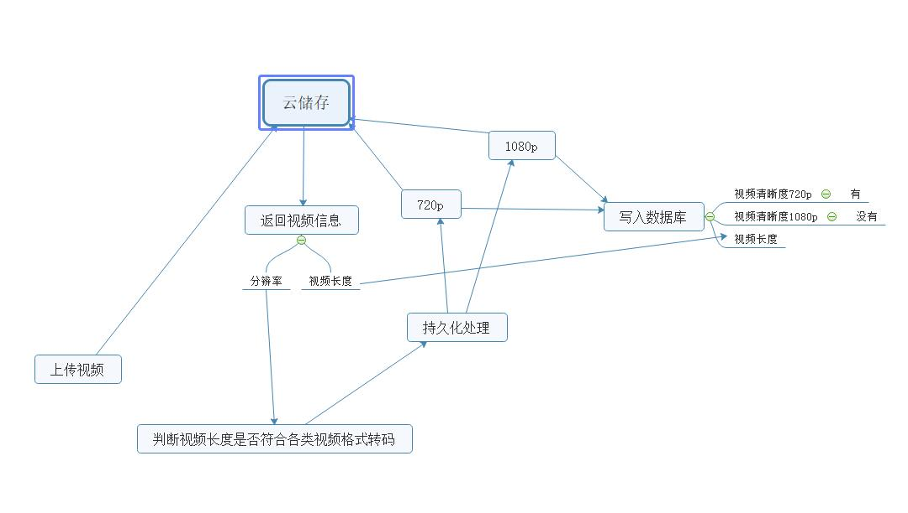

详细项目在 https://github.com/ShenVi/Niputv
该项目是基于七牛云存储上传和转码 因为自己储存视频和转码视频需要非常多服务器来协同处理才能应付大量的视频转码 因此推荐大家用云服务来开发
一切要先从前端开始
首先是开发一个获取上传许可的token
#获取视频上传许可证
@upload.route('/video-upload-token', methods=["GET", "POST"])
@login_required
def get_video_file_upload_token():
#获取filename字段内容 该字段储存的内容为文件名
filename = request.args.get('filename')
filetype = filename.split('.')[-1] #提取文件扩展名
#判断是否允许上传的文件格式
if filetype in VIDEOFILE_TYPE:
#生成md5唯一key(用户邮箱+时间)
md5key = (hashlib.md5((current_user.user_email).encode()).hexdigest()) + time.strftime("%H%M%S", time.localtime())
#重新组合文件名
generate_key = md5key + '.' + filetype
#获取token
data = Get_uploadtoken(bucket_name='video-cache', key=generate_key, outtime='8000') #此处使用完整key
if(data):#判断token是否获取成功
return json.dumps({'code':'ok', 'text':'成功获取视频上传许可证', 'uploadtoken':data, 'key':md5key, 'filetype':filetype}) #此处使用非完整key
return json.dumps({'code':'no', 'text':'许可证生成失败', 'uploadtoken':'', 'filetype':filetype})
return json.dumps({'code':'no', 'text':'上传了非法的文件', 'uploadtoken':'', 'filetype':filetype})
由于内容及其复杂 接下来我们来逐行分析
filename = request.args.get('filename')
filetype = filename.split('.')[-1] #提取文件扩展名
判断是否允许上传的格式
if filetype in VIDEOFILE_TYPE:
VIDEOFILE_TYPE = ["flv","mp4"]
COVERFILE_TYPE = ["png","jpg","jpeg","gif"]
根据用户id生成不可重复的key 组合新的视频文件id
md5key = (hashlib.md5((current_user.user_email).encode()).hexdigest()) + time.strftime("%H%M%S", time.localtime())
generate_key = md5key + '.' + filetype
Get_uploadtoken 是我开发的闭合包 用于获取上传的token 使用方法是
data = Get_uploadtoken(bucket_name='video-cache', key=generate_key, outtime='8000') #此处使用完整key
#实际上其实很简单
def Get_uploadtoken(bucket_name, key, outtime):
q = Auth(access_key, secret_key)
token = q.upload_token(bucket_name, key, int(outtime))
return token
最后返回上传许可证
if(data):#判断token是否获取成功
return json.dumps({'code':'ok', 'text':'成功获取视频上传许可证', 'uploadtoken':data, 'key':md5key, 'filetype':filetype}) #此处使用非完整key
return json.dumps({'code':'no', 'text':'许可证生成失败', 'uploadtoken':'', 'filetype':filetype})
此处的原理是 把key缓存到upload里面 并且选中视频 在视频上传完成以后会更改上传状态 在视频未上传完成之前是无法发布视频 提交视频至后台的
//记录上传完成
function cache_uploadover() {
$("#datadiv-uploadtype").data("uploadtype","true")
console.log("成功记录已上传完成状态")
}
//更改上传后获取上传文件的token
$('#uploadForm').change(
function () {
$.getJSON("video-upload-token?filename=" + $("input[name='file']").prop('files')[0]['name'],
function (data, textStatus) {
console.log(data)
if (data['code'] == "ok") {
//初始化上传状态
$("#datadiv-uploadtype").data("uploadtype","false")
//写入上传密匙
$("#video_key").val(data['key'] + '.' + data['filetype'])
$("#video_token").val(data['uploadtoken']);
//封面参数
$("#cover_key").val(data['key'])
console.log("成功获取上传token")
} else {
alert(data['text'])
}
});
});
//上传视频到七牛
$("#upload").click(
function () {
$("#page1").hide();
$("#page2").show();
// 上传视频到七牛云
$('#process_video').text('正在上传')
var category_sel = $("#category").val()
if (category_sel == 'none') {
get_main_category();
};
$.ajax({
url: 'https://upload-z2.qiniup.com',
type: 'POST',
cache: false,
data: new FormData($('#uploadForm')[0]),
processData: false,
contentType: false,
xhr: function () {
myXhr = $.ajaxSettings.xhr();
if (myXhr.upload) {
myXhr.upload.addEventListener('progress', function (e) {
if (e.lengthComputable) {
var percent = Math.floor(e.loaded / e.total * 100);
if (percent <= 100) {
$("#process_video").html('已上传：' + percent + '%');
}
if (percent >= 100) {
$("#process_video").html(
'文件上传完毕，请等待...');
}
}
}, false);
}
return myXhr;
},
}).done(function (res) {
//上传成功
console.log("上传成功")
$("#process_video").html("上传成功");
cache_uploadover()'未上传视频 改为上传成功'
}).fail(function (res) {
//上传失败
console.log("上传失败")
});
});
//发送发布数据
function plusvideorsdata() {
console.log("执行推送视频信息")
console.log("获取到的类型"+$("#datadiv-covertype").data("covertype"))
coverType = $("#datadiv-covertype").data("covertype")
if (coverType == "true") {
var coverupload = true
var cover_key = $("#cover_key").val()
console.log("存在封面")
} else {
var coverupload = false
var cover_key = ''
console.log("不存在封面")
}
var video_title = $("#video_title").val() //视频标题
var video_introduction = $("#video-introduction").val() //视频信息
var category = $('#category').val() //主分类
var subdivision = $('#subdivision').val() //子分类
var reprint = $('#reprint').val() //是否转载
var tagdata = $('#tags').tagEditor('getTags')[0].tags;
$.ajax({
type: "post",
dataType: 'json',
contentType: "application/json; charset=utf-8",
url: "release",
cache: false,
data: JSON.stringify({
"video_key": $("#video_key").val(),
"cover_key": cover_key,
"covertype": coverupload,
"category": category,
"subdivision": subdivision,
"video_title": video_title,
"video_introduction": video_introduction,
"reprint": reprint,
"tag": tagdata,
}),
success: function (data) {
alert(data['type'])
}
});
}
当用户在此处执行完一整个流畅以后 相当于 获取云存储上传许可 上传视频 和储存到云存储 这一系列的工作都已经完成了
#发布视频
@upload.route('/release', methods=["POST"])
@login_required
def release_video():
if request.method == 'POST':
jsondata = request.json
print(jsondata)
if jsondata['video_title'] == '':
return json.dumps({'code':'no', 'text':'视频名不能为空'})
if jsondata['video_key'] == '':
return json.dumps({'code':'no', 'text':'出现未知错误'})
if jsondata['category'] == '':
return json.dumps({'code':'no', 'text':'未选择分区或类目'})
if jsondata['subdivision'] == '':
return json.dumps({'code':'no', 'text':'未选择分区或类目'})
if jsondata['video_introduction'] == '':
return json.dumps({'code':'no', 'text':'视频介绍不能为空'})
if jsondata['reprint'] == None or jsondata['reprint'] == '':
reprint = ''
else:
reprint = jsondata['reprint']
if jsondata['cover_key'] == '' or jsondata['cover_key'] == None:
print('不存在缩略图')
#不存在封面和上传类型
coverkey = jsondata['video_key'].split(".")[0]
#生成缩略图(返回的是生成的值)
videocover = Generate_video_cover(coverkey=coverkey,videokey=jsondata['video_key'])
else:
if jsondata['covertype'] == True:
#存在封面 存在上传类型
cover_transcoding(key = jsondata['cover_key'])#压缩封面图生成缩略图
videocover = jsondata['cover_key']
#禁用4K
grade_4k = '0'
try:
#发起持续化业务处理
videodata = continuous_video_transcoding(key=jsondata['video_key'])
#确保不存在问题后生成视频稿件(并返回id)
videoid = create_newvidoe(partition=jsondata['category'], category=jsondata['subdivision'], grade_4k=grade_4k, video_cover=videocover, video_name=jsondata['video_title'], video_introduction=jsondata['video_introduction'], video_reprint=jsondata['reprint'])
#print('vidoeid:',videoid)
#tag处理业务
write_tag(tag=jsondata['tag'], vid=videoid)
write_videoinfo(videodata,videoid = videoid,k4 = grade_4k)
upload_category_upcount(jsondata['subdivision'])
return json.dumps({'code':'ok'})
except:
return json.dumps({'code':'no','text':'系统繁忙 请重试提交'})
#视频进入持续化处理
def continuous_video_transcoding(key):
#获取视频参数
videoinfo = get_cachevideo_info(key)
videotime = videoinfo['video_duration'] #视频长度
videowidth = videoinfo['video_width'] #视频宽度
videoheight = videoinfo['video_height'] #视频高度
#判断视频清晰度条件 符合条件的清晰度会返回true 不符合返回False
sharpness = if_transcoding_condition(width=videowidth, height=videoheight)
这里是判断视频的清晰度 返回可转码的条件 是重点
if_transcoding_condition（）是我自己写的一个判断库 可看下面 原理非常简单
video4k = sharpness['4k']
video2k = sharpness['2k']
video360p = sharpness['360p']
video480p = sharpness['480p']
video720p = sharpness['720p']
video1080p = sharpness['1080p']
#把视频提交到转码发起机制{v360 = true if v360 = true 执行 video_transcoding('文件','清晰度')}
transcoding_distribution(key=key, v360=video360p, v480=video480p, v720=video720p, v1080=video1080p, v2k=video2k, v4k=video4k)
transcoding_distribution()这个是把已经获取到的视频数据和通过转码许可判断后的数据传递进去 进行下一步的视频转码操作
return {'key':key ,'videotime':videotime, 'videowidth':videowidth, 'videoheight': videoheight, 'v360':sharpness['360p'], 'v480':sharpness['480p'], 'v720':sharpness['720p'], 'v1080':sharpness['1080p'], 'v2k':sharpness['2k'], 'v4k':sharpness['4k']}
get_cachevideo_info()是我自己写的一个获取视频参数的封装包
get_cachevideo_info()#获取视频高宽信息
def get_cachevideo_info(key): videoinfo = requests.get('储存桶'+ key +'?avinfo') videoinfo = videoinfo.json() if(videoinfo): video_width = videoinfo['streams'][0]['width'] video_height = videoinfo['streams'][0]['height'] try: video_time = videoinfo['streams'][0]['duration'] except: video_time = videoinfo['format']['duration'] #格式化取出视频时长 #time = str(datetime.timedelta(seconds=int(float(video_time)))) #取整数秒 time = int(float(video_time)) videoinfo = { 'video_width': video_width, 'video_height': video_height, 'video_duration': time, } return videoinfo
if_transcoding_condition()#判断视频可转换清晰度
def if_transcoding_condition(width, height): video_360p = False video_480p = False video_720p = False video_1080p = False video_2k = False video_4k = False #360P 640X360 -10 ''' if height > 350: if width > 630: ''' video_360p = True #480P 852x480 -10 if height > 470: if width > 842: video_480p = True #720P 1280X720 -10 if height > 710: if width > 1270: video_720p = True #1080P 1920X1080 -10 if height > 1070: if width > 1910: video_1080p = True #2K 2560x1440 -10 if height > 1430: if width > 2550: video_2k = True #2K 3840x2160 -10 if height > 2150: if width > 3830: video_4k = True pxlist = { '360p': video_360p, '480p': video_480p, '720p': video_720p, '1080p': video_1080p, '2k': video_2k, '4k': video_4k, } return pxlist
#判断视频可转码清晰度(传入{v360 = true if v360 = true 执行 video_transcoding('文件','清晰度')})
def transcoding_distribution(key, v360, v480, v720, v1080, v2k, v4k):
if v360 == True:
video_transcoding(key, '360p')
if v480 == True:
video_transcoding(key, '480p')
if v720 == True:
video_transcoding(key, '720p')
if v1080 == True:
video_transcoding(key, '1080p')
if v2k == True:
video_transcoding(key, '2k')
if v4k == True:
video_transcoding(key, '4k')
if v2k == True:
video_transcoding()是将符合的条件进行转码 不符合的跳过
def video_transcoding(key, pxtype):
pxtype == 传入的执行条件
video_sizi video_kbps video_mp3kbps 是每一个转码方式的参数 分别是分辨率 码率 音频码率
if pxtype == '360p':
video_sizi = '640x360'
video_kbps = '750k'
video_mp3kbps = '128k'
if pxtype == '480p':
video_sizi = '852x480'
video_kbps = '980k'
video_mp3kbps = '192k'
if pxtype == '720p':
video_sizi = '1280x720'
video_kbps = '1200k'
video_mp3kbps = '230k'
if pxtype == '1080p':
video_sizi = '1920x1080'
video_kbps = '1800k'
video_mp3kbps = '320k'
if pxtype == '2k':
video_sizi = '2560x1440'
video_kbps = '3200k'
video_mp3kbps = '320k'
if pxtype == '4k':
video_sizi = '3840x2160'
video_kbps = '4000k'
video_mp3kbps = '320k'
q = Auth(access_key, secret_key)
#要转码的文件所在的空间和文件名。
bucket = 'video-cache'
key = str(key)
filekey = str(key)
#转码是使用的队列名称。
pipeline = 'transcoding'
#要进行转码的转码操作。
fops = 'avthumb/mp4/s/'+ video_sizi +'/vb/'+ video_kbps +'/ab/'+ video_mp3kbps +'/acodec/libmp3lame'
此处会和video_sizi video_kbps video_mp3kbps进行一个合并 把转码参数提交到云存储
#生成新的文件名
name = key.split(".")[0]
key_tpye = key.split(".")[1]
key = name + '-' + pxtype + '.'+ 'mp4'
这里会生成新的文件名 格式是 key.视频格式 拆分成 key + pxtype (pxtype 是传入的转码条件 内容是360p 480p 720p 1080p等字符串)
组合成的视频名字是key-(??p).mp4
#可以对转码后的文件进行使用saveas参数自定义命名，当然也可以不指定文件会默认命名并保存在当前空间
video-store是用来储存视频的储存桶 用户默认上传视频24小时删除的储存桶是video-cache储存桶 在提交转码后将会把转码完成的文件转移到video-store储存桶 默认的video-cache不需要删除文件 只需等待他自动删除 因为有24小时的生存机制
saveas_key = urlsafe_base64_encode('video-store:' + key)
fops = fops+'|saveas/'+saveas_key
pfop = PersistentFop(q, bucket, pipeline)
ops = []
ops.append(fops)
ret, info = pfop.execute(filekey, ops, 1)
print(info)
#assert ret['persistentId'] is not None
最后这一段需要参考七牛云存储官方文档 这里是把参数和视频文件 和持续化处理进行提交的地方 会返回一个业务id 如果需要查询转码状态等可以通过查询返回的id进行查询
try:
#发起持续化业务处理
videodata = continuous_video_transcoding(key=jsondata['video_key'])
#确保不存在问题后生成视频稿件(并返回id)
videoid = create_newvidoe(partition=jsondata['category'], category=jsondata['subdivision'], grade_4k=grade_4k, video_cover=videocover, video_name=jsondata['video_title'], video_introduction=jsondata['video_introduction'], video_reprint=jsondata['reprint'])
#print('vidoeid:',videoid)
#tag处理业务
write_tag(tag=jsondata['tag'], vid=videoid)
write_videoinfo(videodata,videoid = videoid,k4 = grade_4k)
upload_category_upcount(jsondata['subdivision'])
这里有一个 write_videoinfo() 是用来提交视频的数据进数据库的 代码在下面
return json.dumps({'code':'ok'})
except:
return json.dumps({'code':'no','text':'系统繁忙 请重试提交'})
#确保不存在问题后生成视频稿件(并返回id)
videoid = create_newvidoe(partition=jsondata['category'], category=jsondata['subdivision'], grade_4k=grade_4k, video_cover=videocover, video_name=jsondata['video_title'], video_introduction=jsondata['video_introduction'], video_reprint=jsondata['reprint'])
#生成视频稿件
def create_newvidoe(partition, category, grade_4k, video_cover, video_name, video_introduction, video_reprint):
cachedata = es.index(index="video", doc_type='video', body={
'partition': partition, #视频分区
'category': category, #视频类目
'authorid': current_user.id, #作者id
'grade_4k': grade_4k, #4k条件 0=无 1=有
'release_date': time.strftime("%Y-%m-%d",time.localtime(time.time())), #发布日期
'release_time': time.strftime('%H:%M:%S',time.localtime(time.time())), #时间
'timestamp': datetime.now(), #排序日期
'status': 1, #视频状态 0=正常 1=未审核 2=退回
'video_cover': video_cover, #视频封面
'video_name': video_name, #视频名
'video_introduction': video_introduction, #视频介绍
'video_duration': '', #视频时长
'reprint': video_reprint, #视频转载地址(无地址=原创)
'play_statistics': 0, #播放数统计
'comment_statistics': 0, #评论数统计
'like_frequency': 0, #喜欢统计
'dislike_frequency': 0, #不喜欢统计
})
es.indices.refresh(index="video")
return cachedata['_id']
由于我是使用elasticsearch来储存视频的 所以这个稿件是储存在了elastic里面
def write_videoinfo(data, videoid, k4):
print('写入视频金数据库')
print(videoid)
print(data)
#更新视频时长信息 (视频id 视频长度 4K条件)
write_videomain(videoid=videoid,video_duration=data['videotime'], grade_4k=k4)
#储存进数据库
Videofile(videoid=videoid, filekey=data['key'], clear360=data['v360'], clear480=data['v480'], clear720=data['v720'], clear1080=data['v1080'], clear2k=data['v2k'], clear4k = data['v4k'])
#上传视频数量+1
video_quantity_plus()
这里只需要注意 Videofile()这个函数
class Videofile(db.Model):
# 表的名字
__tablename__ = 'videofile'
id = db.Column(db.Integer, primary_key=True) #自增id
videoid = db.Column(db.Text) #视频 不存在视频id视为空文件
filekey = db.Column(db.Text) #视频
upload_userid = db.Column(db.Integer) #上传者
clear360 = db.Column(db.Boolean)
clear480 = db.Column(db.Boolean)
clear720 = db.Column(db.Boolean)
clear1080 = db.Column(db.Boolean)
clear2k = db.Column(db.Boolean)
clear4k = db.Column(db.Boolean)
# 定义对象
def __init__(self, videoid=None, filekey=None, upload_userid=None, clear360=None, clear480=None, clear720=None, clear1080=None, clear2k=None, clear4k=None):
self.videoid = videoid #写入视频id
self.filekey = filekey #视频文件
self.upload_userid = current_user.id #上传者
self.clear360 = clear360
self.clear480 = clear480
self.clear720 = clear720
self.clear1080 = clear1080
self.clear2k = clear2k
self.clear4k = clear4k
self.update() # 提交数据
# 提交数据函数
def update(self):
db.session.add(self)
db.session.commit()
数据库储存的数据_如果360 = true 则= 该视频有360p的清晰度格式
cachedata = es.index(index="video", doc_type='video', body={
'partition': partition, #视频分区
'category': category, #视频类目
'authorid': current_user.id, #作者id
'grade_4k': grade_4k, #4k条件 0=无 1=有
'release_date': time.strftime("%Y-%m-%d",time.localtime(time.time())), #发布日期
'release_time': time.strftime('%H:%M:%S',time.localtime(time.time())), #时间
'timestamp': datetime.now(), #排序日期
'status': 1, #视频状态 0=正常 1=未审核 2=退回
'video_cover': video_cover, #视频封面
'video_name': video_name, #视频名
'video_introduction': video_introduction, #视频介绍
'video_duration': '', #视频时长
'reprint': video_reprint, #视频转载地址(无地址=原创)
'play_statistics': 0, #播放数统计
'comment_statistics': 0, #评论数统计
'like_frequency': 0, #喜欢统计
'dislike_frequency': 0, #不喜欢统计
})
这个是组成播放地址的方法 var videoptype_list = [{ "calss": "360P", "datacalss": "360p", "type": getvideofile['360'] }, { "calss": "480P", "datacalss": "480p", "type": getvideofile['480'] }, { "calss": "720P", "datacalss": "720p", "type": getvideofile['720'] }, { "calss": "1080P", "datacalss": "1080p", "type": getvideofile['1080'] }, { "calss": "2K", "datacalss": "2k", "type": getvideofile['2k'] }, { "calss": "4K", "datacalss": "4k", "type": getvideofile['4k'] }, ] //获取视频720P清晰度 var video_sharpness720p = getvideofile['720'] //提取filekey var filekey = getFileName(getvideofile['key']) //解析filekey var videofilekey = filekey.substring(0, filekey.lastIndexOf(".")); //循环写入可选清晰度 $.each((videoptype_list), function () { insert_video_sharpness(this) });